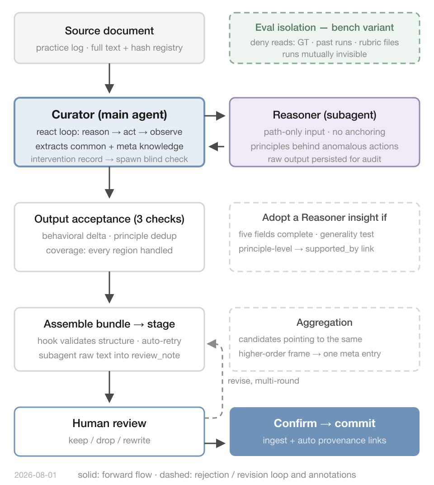
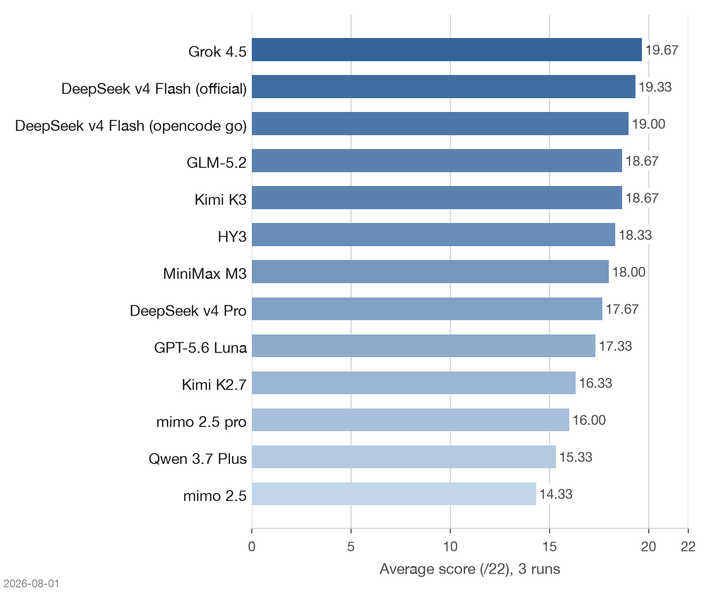
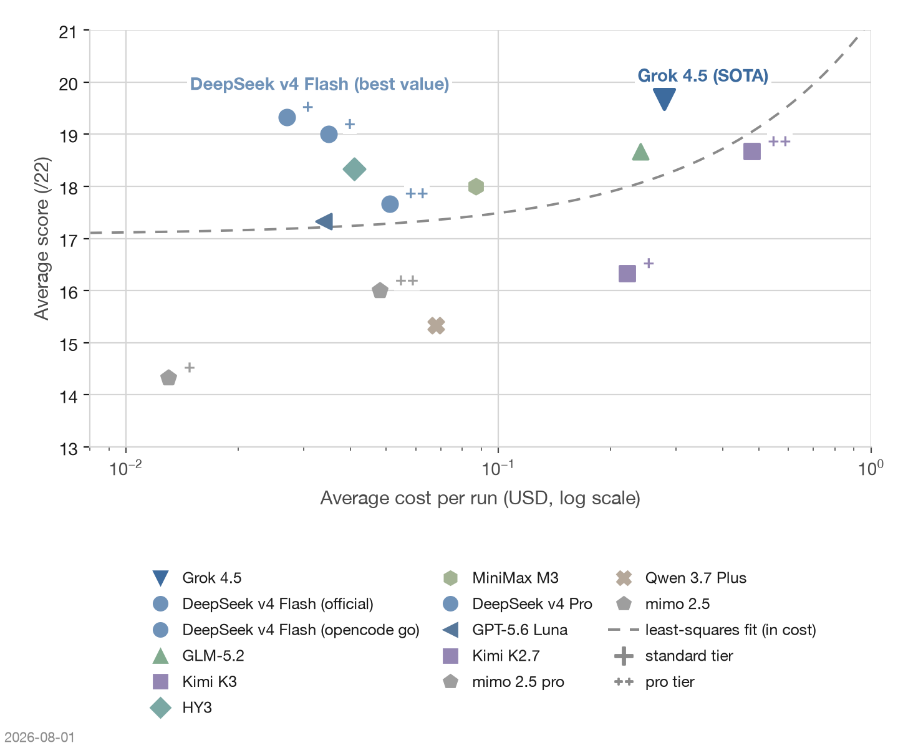

LiveCuratorBench is a closed, agentic benchmark that tests whether a model can explore a long practice document and extract reusable methodology while separating it from one-off execution details. Both the data and the ground truth are hand-labeled and never published, so the benchmark cannot be gamed. Across the first thirteen models, Grok 4.5 took first place; DeepSeek v4 Flash finished close behind at a tenth of the cost.
Agent memory systems are good at remembering what happened. The harder problem is turning what happened into knowledge that transfers: the requirements, strategies, and evaluation criteria that survive past a single session. A Curator agent I run does exactly this—given a long practice document, it extracts reusable methodology and keeps it apart from one-off execution details. To compare how different models drive this system, I needed a benchmark that models cannot prepare for, because anything public eventually leaks into training data. The result is LiveCuratorBench. This post introduces it and reports the first round of results; future rounds will be short updates that link back here.

The task
The task is meta-knowledge extraction. The input is a long document containing a real working process: decisions, detours, corrections, and lessons. The model must pull out the knowledge that would still be useful on a different project—requirements, strategies, procedures, evaluation criteria, code templates—and correctly set aside the details that only mattered once.
LiveCuratorBench is agentic by design. The model under test does not answer questions about a document; it runs an agent loop over the document—deciding where to read next and what deserves extraction. A run therefore tests two abilities at once: agentic exploration of a long document, and the reasoning that judges what counts as knowledge. The expected output has two kinds of entries: common knowledge tied to the project at hand, and meta-knowledge that transfers to other projects.
Two design choices keep the benchmark honest. First, the dataset is closed: every source document and every ground-truth label is hand-annotated by me and never published, so no model can have memorized the answers. Second, scoring uses a 22-point rubric covering five dimensions—completeness of the extracted entries, correctness of their classification, level of abstraction, deduplication quality, and honesty of the exclusion list (what the model chose not to extract). The rubric went through three rounds of manual scoring calibration before any model was run.
Each model runs the full task independently three times, with the vendor's default parameters, and the average is reported.
Evaluation criteria
Scoring works probe by probe. A probe is one hand-labeled expectation: a knowledge point the agent should recover, or a quality property its output should have. Each probe is scored 0–2 against ground truth I annotate by hand. Probes fall into three groups:
| Group | What it checks |
|---|---|
| Core knowledge probes | Recovery of labeled meta-knowledge entries, at the right abstraction level |
| Quality checks | Honest sourcing; deduplication |
| Stretch probes | Subtle behaviors at the edge of current models |
Core probes carry most of the score, and the hardest of them are cleared only rarely, which makes them the real discriminators of model capability. A document's score is the sum over its probes; in the results below, scores are shown out of 22—the maximum on the document with the most probes—and individual probes appear by codename.
The system under test
The Curator agent is built on a modified opencode backend and follows a main-agent / subagent architecture. The main agent holds the full state of the task and does two kinds of extraction: the factual, project-level knowledge, and—reading across the whole document—the higher-order knowledge. The Reasoner subagent has a narrower and harder job: it mines the moments where the user's intent shifts. In a real trajectory the user might ask for a code change, then another, and then suddenly say "stop—let's first agree on a standard." That shift is itself evidence: it implies the earlier steps violated some convention or assumption. The knowledge latent in such intent transitions is exactly what the Reasoner is built to surface; its raw output is persisted with the run trace for auditing and scoring. A custom tool layer gives the agent a structured path from staged draft to human review to committed entry, and every run is fully replayable.
Evaluation runs use a dedicated bench variant of the agent. It is denied read access to historical results, ground truth, and scoring files, so runs are invisible to each other and the model never sees the answers.
First results
Thirteen models completed three runs each in two batches on 2026-07-31 and 2026-08-01: eight over official or subscription channels, five over the opencode go channel. Scores are averages out of 22.


Thirteen models were tested in two batches on 2026-07-31 and 2026-08-01: eight over official or subscription channels (DeepSeek v4 Flash and v4 Pro, GLM-5.2, Kimi K3 and K2.7, HY3, mimo 2.5 and 2.5 pro), five over the opencode go channel (Grok 4.5, DeepSeek v4 Flash, MiniMax M3, GPT-5.6 Luna, Qwen 3.7 Plus). DeepSeek v4 Flash is the official version throughout—substantially stronger than the earlier preview—and it ran over both channels. Reasoning was switched on wherever the vendor exposes it (high / thinking / xhigh; Grok 4.5 and Qwen 3.7 Plus expose no reasoning setting). In the scatter plot, cost sits on a logarithmic axis: reading upward finds extraction quality—Grok 4.5 (SOTA) is the strongest extractor—while reading up and to the left finds the most quality per dollar, which is DeepSeek v4 Flash (best value). Marker shape and color encode the vendor, crosses mark the tier within a vendor (+ standard, ++ pro), and the dashed curve is a least-squares fit of score on cost. Cost sources, token accounting, and reporting quirks are documented in the appendix.
| Model | Score (/22) | Avg tokens/run | Avg cost/run |
|---|---|---|---|
| Grok 4.5 | 19.67 | 159.6K | $0.278 ¹ |
| DeepSeek v4 Flash (official) | 19.33 | 228.7K | $0.027 ¹ |
| DeepSeek v4 Flash (opencode go) | 19.00 | 396.9K | $0.035 ¹ |
| GLM-5.2 | 18.67 | 196.1K | ≈$0.24 ² |
| Kimi K3 | 18.67 | 154.0K | ≈$0.48 ² |
| HY3 | 18.33 | 195.5K | $0.041 ¹ |
| MiniMax M3 | 18.00 | 216.7K | $0.087 ¹ |
| DeepSeek v4 Pro | 17.67 | 225.9K | $0.051 ¹ |
| GPT-5.6 Luna | 17.33 | 285.2K | $0.034 ¹ |
| Kimi K2.7 | 16.33 | 209.8K | $0.222 ¹ |
| mimo 2.5 pro | 16.00 | 185.2K | ≈$0.048 ² |
| Qwen 3.7 Plus | 15.33 | 178.6K | $0.068 ¹ |
| mimo 2.5 | 14.33 | 256.3K | ≈$0.013 ² |
What the results show
The ranking converged across all three runs. Grok 4.5 scored 19, 20, 20—first overall at 19.67. DeepSeek v4 Flash followed: 19.33 over the official endpoint (19, 20, 19) and 19.00 over opencode go (19, 19, 19). The 0.33 channel gap is within single-run noise, so switching channels does not require re-testing a model. The Flash ≥ Pro pattern held in every DeepSeek run, and mimo 2.5 finished last in every run.
Grok 4.5 is also the first model to clear the hardest core probe, G5, in every run. G5 rewards deriving why model-facing text must be treated as few-shot demonstrations—a contaminated input teaches contamination. Before Grok, 24 runs hit full marks on it only 4 times, all in the same round, which looked like an environment effect. Three independent hits upgrade G5 from a low-probability lottery to a real discriminator of model capability.
Score and cost still do not correlate. Grok leads at $0.278 per run; Flash (official) follows at $0.027—a tenth of the cost for 0.34 fewer points, which makes it the best value in the field (marked in the scatter plot above). The most expensive model by list price, Kimi K3 (≈$0.48 per run, output priced at ≈$14 per million tokens), only tied GLM-5.2—though it got there with the fewest tokens in the field, 154K per run. The cheapest run by estimate, mimo 2.5 at ≈$0.013, scored last.
Token spend does not buy score either. The two smallest budgets—Kimi K3 at 154K and Grok 4.5 at 159.6K—took two of the top three spots, while the largest budget (opencode go Flash, 396.9K) landed third. Generating more output did not help: MiniMax M3 produced the most output tokens and landed mid-table. The per-run breakdown:
| Model | Input | Output | Reasoning | Cache read |
|---|---|---|---|---|
| Grok 4.5 | 53.2K | 13.8K | 7.8K | 84.9K |
| DeepSeek v4 Flash (official) | 78.9K | 13.8K | 42.7K | 93.3K |
| DeepSeek v4 Flash (opencode go) | 98.7K | 33.0K | 40.7K | 224.5K |
| GLM-5.2 | 77.4K | 12.6K | 19.7K | 86.4K |
| Kimi K3 | 61.1K | 20.4K | n/r | 72.5K |
| HY3 | 106.1K | 14.8K | 27.6K | 46.9K |
| MiniMax M3 | 109.8K | 41.5K | n/r | 65.4K |
| DeepSeek v4 Pro | 59.8K | 14.6K | 13.9K | 137.7K |
| GPT-5.6 Luna | 78.3K | 22.8K | 18.7K | 165.4K |
| Kimi K2.7 | 82.6K | 24.1K | 7.3K | 95.8K |
| mimo 2.5 pro | 75.2K | 19.1K | n/r | 90.9K |
| Qwen 3.7 Plus | <0.1K | 20.9K | 0 | 95.6K |
| mimo 2.5 | 54.1K | 12.0K | 6.1K | 184.1K |
Caching barely helps this workload: cache reads cover only 30–70% of total input across models, because exploring a document keeps pulling in fresh, unseen context rather than re-reading a fixed prefix. "n/r" marks endpoints that do not report reasoning tokens (details in the appendix), not disabled reasoning.
Failure modes run in families. Both mimo variants under-extract—the pro produces too little, the non-pro mislabels the form. Qwen 3.7 Plus under-extracts unstably: its meta-knowledge count swung 9, 2, 5 across runs, the only model to drop below 15 in a single run. MiniMax M3's worst run repeated Kimi K2.7's signature error—extracting an entire entry from an unconfirmed proposal. Across vendors, the points lost cluster in two places: how honestly the exclusion list is followed, and how stable the production of high-abstraction entries is.
What is next
New models and new rounds will be reported as short result posts that link back to this page for the task description, so this post stays the standing reference for how the benchmark works.
Appendix: measurement details
Cost. ¹ Metered billing, taken from actual opencode session charges. ² Subscription channels have no per-run billing, so cost is estimated from official list prices in CNY (input / cache-hit / output rates), converted at ¥7.15 = $1; estimates exist only for cross-table comparison.
Tokens. Token counts come from local opencode session storage and sum the main-agent and subagent sessions: input + output + reasoning + cache read (cache writes were zero throughout). HY3's third round failed on first attempt (about 156K tokens, $0.042, not counted) and succeeded on retry.
Reporting quirks. Kimi K3, mimo 2.5 pro, and MiniMax M3 ran with reasoning enabled, but their endpoints do not return a reasoning field in usage reports, so those tokens are counted in Output and Table 2 shows n/r (not reported); their message streams show reasoning activity at the same scale as other models. Qwen 3.7 Plus has no reasoning variant, and its endpoint reports nearly all input as cache read, so its input figure (<0.1K) is unreliable.